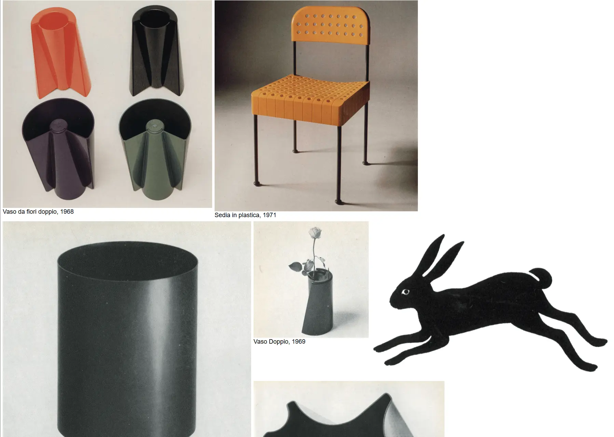

Enzo Mari
- Культура и искусство
- Арт-проект
- Минимализм
- Монохром
- Сайт жив

Что это
Одностраничный архив работ Энцо Мари: 129 фотографий с подписями «название, год» появляются по одной при клике и складываются в мозаику случайной ширины. На странице нет ни навигации, ни заголовков — только работы и минимальная служебная подпись. Минималистично оформленный онлайн-архив работ Энцо Мари — итальянского художника-модерниста и дизайнера мебели. Каждая следующая работа вызывается кликом, пока холст не будет заполнен.
Чем интересен
- Ссылок на странице нет вообще — ноль тегов <a> — и вся навигация сведена к одному действию: клик в любом месте добавляет следующую работу.
- Порядок работ перемешивается один раз при загрузке, дальше показ идёт по фиксированной последовательности; когда 129 работ заканчиваются, каждый следующий клик добавляет одно и то же фото автора в мастерской.
- Ширина каждой работы выбирается случайно в диапазоне 25–50% контейнера, поэтому мозаика на float собирается без сетки и ряды не выравниваются.
- Анимаций нет ни одной: ноль transition, keyframes, transform и hover-состояний — работа появляется мгновенной вставкой узла.
- Метаданные расходятся с содержанием: в разметке lang="en", хотя подписи и описание на итальянском; заголовков нет, у 129 изображений нет alt, og-тегов и микроразметки тоже нет, robots.txt и sitemap.xml отсутствуют.
Паспорт
- Домен
- enzomari.com
- Тип сайта
- Каталог
- Категории
- Культура и искусство
- Подкатегории
- Арт-проект
- Для кого
- Дизайнерам, Архитекторам, Музеям
- Стиль
- Минимализм, Монохром
- Язык
- Итальянский
- Страна
- Италия
- Автор
- не указано
- Год
- не указано
- Добавлен в коллекцию
- 30.09.2026
Палитра
-
#FFFFFF— 36% кадра -
#DFDDD6— 23% кадра -
#212121— 12% кадра -
#3F4140— 8% кадра -
#BEB6AC— 8% кадра
- Режим
- Светлая
- Цвет фона
- Нейтральный
Технические факты
- HTTPS
- да
- Meta viewport
- да
- Title
- Enzo Mari (9 симв.)
- Description
- Un designer e accademico italiano. (34 симв.)
- Open Graph
- нет
- Структурированные данные
- нет
- Sitemap
- нет: /sitemap.xml отдаёт 404
- Robots
- нет: /robots.txt отдаёт 404
- Аналитика
- счётчиков не найдено
- Проверено ссылок
- 139
- Битые ссылки
- https://enzomari.com/robots.txt — 404
https://enzomari.com/sitemap.xml — 404 - Контакты
- не указано
- Юридическая информация
- не указано
Технологии с доказательствами
- jQuery 3.3.1 — единственный внешний ресурс: script src cdnjs.cloudflare.com/…/jquery-3.3.1.min.js; в инлайн-скрипте $(function(){…}), .on('click'), .prepend()
- cdnjs (Cloudflare CDN) — хост единственного внешнего скрипта, HEAD отдаёт 200
- Apache — заголовок ответа Server: Apache
- Bluehost, общий хостинг — заголовок host-header декодируется в shared.bluehost.com; NS-записи ns1/ns2.bluehost.com
- Инлайн-CSS и инлайн-JS — весь CSS — один блок style в head, вся логика — один скрипт в body; внешних css-файлов нет
Что смотреть в первую очередь
Смотреть как пример архива без интерфейса: холст заполняется работами по клику, вся навигация — одно действие. Отдельно показателен контраст между сильной идеей подачи и полным отсутствием метаданных, alt-текстов и поиска.
Похожие в коллекции
- Joshua Baker — общее: Минимализм, Монохром
- Paul Kalkbrenner — общее: Культура и искусство, Минимализм
- WeekSync — общее: Минимализм
- Tinloof — общее: Минимализм